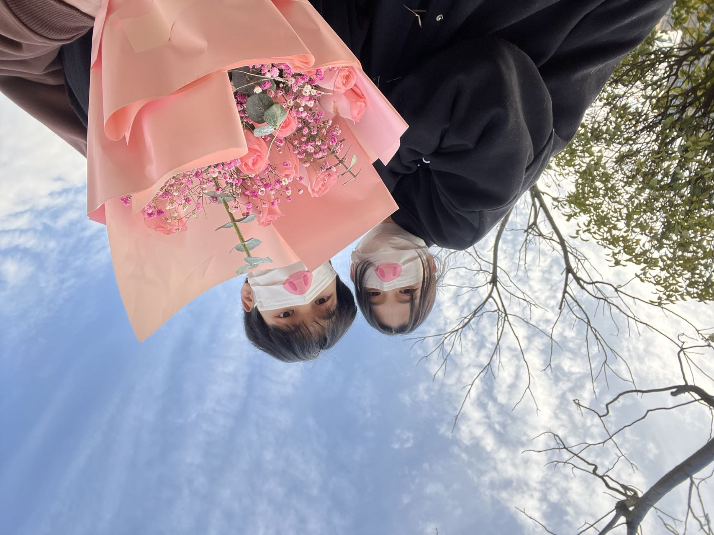

你也许不会相信，我常常想象你是多么美好，多么可爱，但实际见了你面的时候，你比我想象的要美好的多，可爱的多，你不能说我这是说谎，因为如果不然的话，我满可以仅仅想忆你自足，而不必那样渴望着想要看见你。我只愿意凭着这一点灵感的相通，时时带给彼此以慰藉，像流星的光辉，照耀我疲惫的梦寐，永远存一个安慰，纵然在别离的时
候。想和你一起看海看日出日落 晚上牵手去压马路相互依偎着回家 无论哪个季节 去看好多场电影去逛超市 做早中晚餐 对着镜子刷牙 满嘴泡泡的吻你脸颊 去游乐场玩 累了就在沙发上看电视 打游戏石头剪刀布 谁输了就去拿酸奶和薯片。有时候我希望你的一生能被拍成一部漫长的电影。然后让我比你晚出去一百年。一辈子只做一件事。独自坐在房间里，对着墙上的荧幕光影，用我的一生，把你的一生慢慢看完